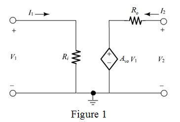

Step 1:
The most convenient representation of voltage amplifier is in terms of  parameters. The following equations describe the
parameters. The following equations describe the  parameters representation:
parameters representation:
…… (1)
…… (2)
Refer to Figure P1.64 in the textbook for the equivalent circuit representation of these equations.
Refer to Figure 1.16(a) in the textbook for the voltage amplifier.
Represent the input and output voltages as  and
and  . Similarly represent the input and output currents as
. Similarly represent the input and output currents as  and
and  .
.
Draw the equivalent circuit.

Step 2:
From the input loop of Figure 1, write the following relation:
…… (3)
From the output loop of Figure 1, write the following relation:
…… (4)
Compare equation (1) with equation (3).
Compare equation (2) with equation (4).
The parameter that correspond to is,
Thus, the  parameter that corresponds to
parameter that corresponds to  is .
is .
Step 3:
The  parameter that correspond to
parameter that correspond to  is,
is,
Thus, the  parameter that correspond to
parameter that correspond to  is .
is .
The  parameter that correspond to
parameter that correspond to  is,
is,
Thus, the  parameter that corresponds to
parameter that corresponds to  is.
is.
The  is the additional parameter with no correspondence in amplifier equivalent circuit because .
is the additional parameter with no correspondence in amplifier equivalent circuit because .
Hence, signifies the reverse current gain at zero input voltage. The amplifier in the absence of  parameter is an open loop amplifier with no feedback.
parameter is an open loop amplifier with no feedback.